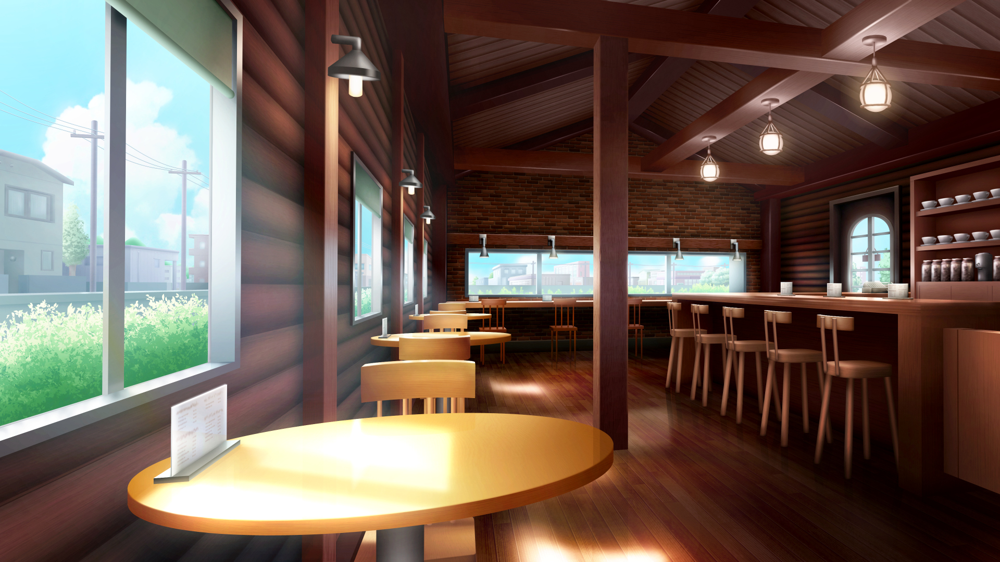

美味しいコーヒー
落ち着きのある店内

喫茶店
画像のような落ち着いた雰囲気の喫茶店のコーヒーはおいしいです。
あなたの身近にそういったお店はありますか。
コーヒー豆おすすめ人気銘柄
キリマンジャロ 薄い酸味やコクが特徴
おすすめの抽出方法:ペーパードリップ
グアテマラ 酸味やコク、華やかな香りが特徴
おすすめの抽出方法:フレンチプレス
ブラジル 酸味と苦みのバランスが良いのが特徴
おすすめの抽出方法:エスプレッソ
エメラルドマウンテン 酸味と甘みが特徴
おすすめの抽出方法:サイフォン
各店舗のコーヒーのこだわり・魅力
ドトールコーヒーショップ
約20箇所から豆を調達しクオリティ優先のため
味のブレ防止など高レベルで品質の安定を図っている
CAFE VELOCHE
コクや甘みや酸味のバランスをとった上質なコーヒー
コーヒー鑑定士が在籍しており美味しいコーヒーの提供
できるように努力している
レストラン
食後に飲む人を見かけると思います
これはフランスの習慣でワインの酔い覚ましとして
食後にコーヒーを飲むようになったといわれている
コンビニ
カフェや専門店がある中でコンビニコーヒーの魅力は
淹れたてのコーヒーが安価な値段で楽しめること
缶コーヒーと変わらない値段で淹れたて、
新鮮なコーヒーが飲める